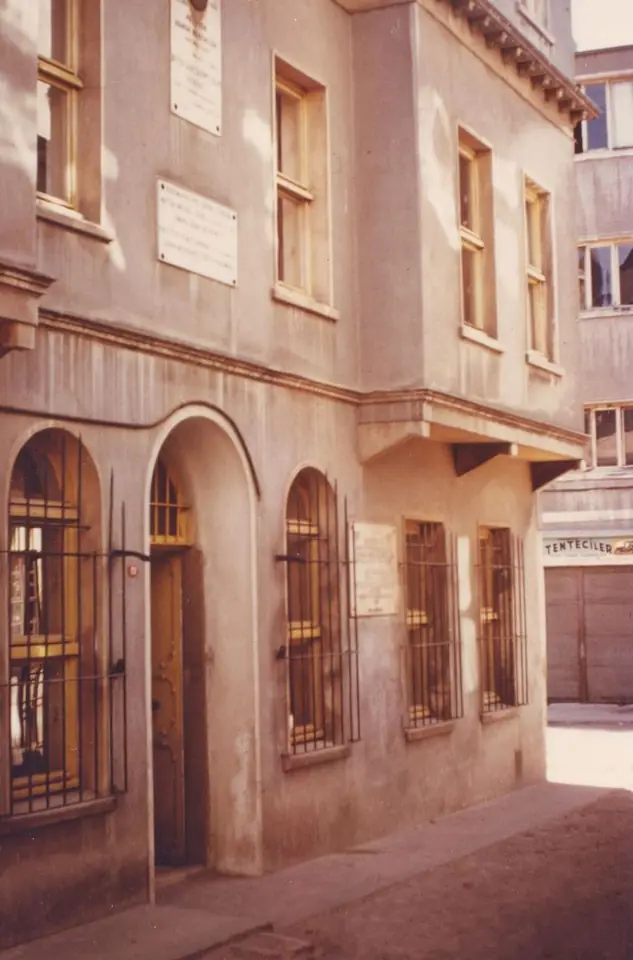
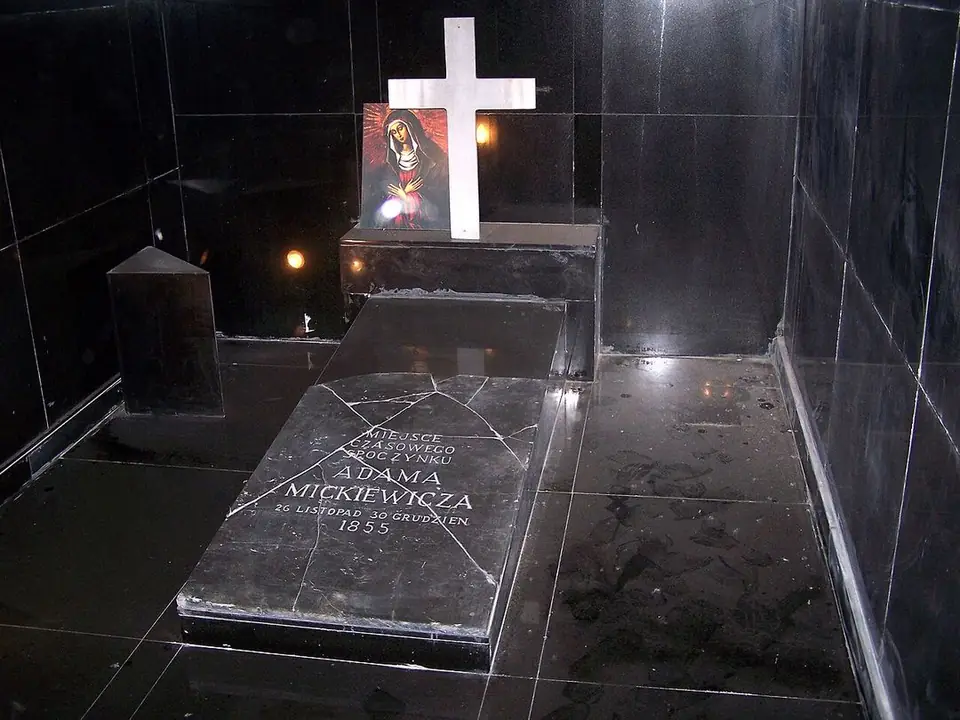

Büyük Göç ve Mickiewicz
Adam Mickiewicz Müzesi
Adam Mickiewicz 26 Kasım 1855'te burada öldü; müzenin kriptasında mermer bir levha, bir haç ve şairin ölüm maskesinin kopyası sizi bekliyor.


- Semt
- Beyoğlu
- Dönem
- 1855 / 1955 / 1984
- Ziyaret
- Ziyarete açık
Hikâye
Polonya'ya ulusal destanı Pan Tadeusz'u kazandıran şair, ölümünden yalnızca iki ay önce İstanbul'a geldi ve burada, Tatlı Badem Sokağı'nın köşesinde öldü.
Adam Mickiewicz 11 Eylül 1855'te, Kırım Savaşı'nın ortasında Paris'ten yola çıktı. Resmî olarak Fransız hükümeti adına bilimsel bir görevdeydi; asıl amacı ise siyasiydi: Rusya'ya karşı Osmanlı'nın yanında savaşacak Polonyalı birliklerin kurulmasına yardım etmek. 22 Eylül'de İstanbul'a vardı, ekimde Burgaz (bugün Bulgaristan'da) yakınlarındaki Osmanlı Kazak alayının kampını ziyaret etti; alayın komutanı Michał Czajkowski, yani Sadık Paşa'ydı. Orada sekreteri Armand Lévy ile Polonyalılarla omuz omuza savaşacak bir Yahudi lejyonu bile tasarladı. Kasımda Mickiewicz, Lévy ve dostu Henryk Służalski Pera'da mütevazı bir ahşap ev kiraladılar. Şair 26 Kasım'da öldü. Yanındakiler koleradan söz etti, sonradan zehirlendiği de ileri sürüldü; ölüm nedeni hiçbir zaman kesinleşmedi.
Ertesi gün ölüm maskesi alındı. Anlatılana göre tahnit edilen naaşı, bugün kripta olan bodrumda 30 Aralık'a kadar Fransa'ya gidecek gemiyi bekledi. O gün yağmura ve soğuğa rağmen yüzlerce kişi tabutun ardından yürüdü: Polonyalılar, başka Slavlar, Rumlar ve Levantenler. Şair Paris yakınlarındaki Montmorency'ye gömüldü; naaşı 1890'da Krakov'daki Wawel Katedrali'ne nakledildi. 1861'de büyük oğlu Władysław evi görmeye geldi; bir Varşova dergisinin yazdığına göre o sırada evde oturan Müslüman aile, babasının son evinin bütün odalarını gezmesine izin verdi.
Ahşap ev 1870 Büyük Pera Yangını'nda yandı. Birkaç yıl sonra Ratyński ailesi arsaya bugünkü kâgir evi yaptırdı; İstanbul'daki Polonyalılara göre eski evin aslına sadık bir kopyasıydı. Kapının üstüne Lehçe ve Fransızca bir kitabe kondu. Burada 1955'te bir müze açıldı. 1977'de kira sözleşmesi bitip evin satılma tehlikesi doğunca Türkiye hükümeti binayı 1979'da satın alıp onarttı; 4 Ekim 1984'te de Varşova Edebiyat Müzesi'nin hazırladığı yeni sergi açıldı.




Nasıl gezilir
Müze, Taksim Meydanı'ndan yürüyerek yaklaşık 10 dakika uzaklıkta, Tarlabaşı Bulvarı'nın öbür tarafındadır. Türk ve İslam Eserleri Müzesi'ne (Kültür ve Turizm Bakanlığı) bağlıdır; sergiyi ise Polonya Başkonsolosluğu'nun desteğiyle Varşova'daki Adam Mickiewicz Edebiyat Müzesi hazırlıyor. Resmî sitede giriş ücretsiz görünüyordu, açılış saatleri ise kaynaklarda farklı; gitmeden önce ikisini de turkishmuseums.com'dan kontrol edin. Önce cepheye bakın: kapının üstündeki anma kitabeleri arasında Ratyński ailesininki de var. İçerideki dört kat şairin hayatını anlatır; Burgaz kampına ayrılmış bir oda da vardır; giriş katında birçok dilde basılmış şiir kartlarından alabilirsiniz. Evin kalbi bodrumdaki kriptadır: şairin “geçici istirahatgâhı”nı belirten mermer levha, haç, ölüm maskesinin kopyası ve Ostra Brama Meryem Ana ikonası. Merdivenler dik ve dardır; bina tekerlekli sandalye için uygun değildir.
Kişiler
- Adam Mickiewicz
- Armand Lévy
- Henryk Służalski
- Władysław Mickiewicz
- Michał Czajkowski (Sadyk Pasza)
- Józef Ratyński
Konum
Beyoğlu, İstanbul · Koordinatlar: 41.03878, 28.97715
Bu yerin geçtiği yürüyüşler
Yakındaki yerler
Kaynaklar
- bazhum.muzhp.pl/media/texts/muzealnictwo/1986-tom-30/muzealni…
- polonika.pl/polonik-tygodnia/muzeum-adama-mickiewicza-w-stamb…
- rcin.org.pl/Content/68779/WA248_83376_P-I-1269_fabianowski.pdf
- dzieje.pl/node/121642
- turkishmuseums.com/museum/detail/2065-istanbul-adam-mickiewic…
- en.wikipedia.org/wiki/Adam_Mickiewicz_Museum,_Istanbul
- gov.pl/web/turkiye/adam-mickiewicz-english